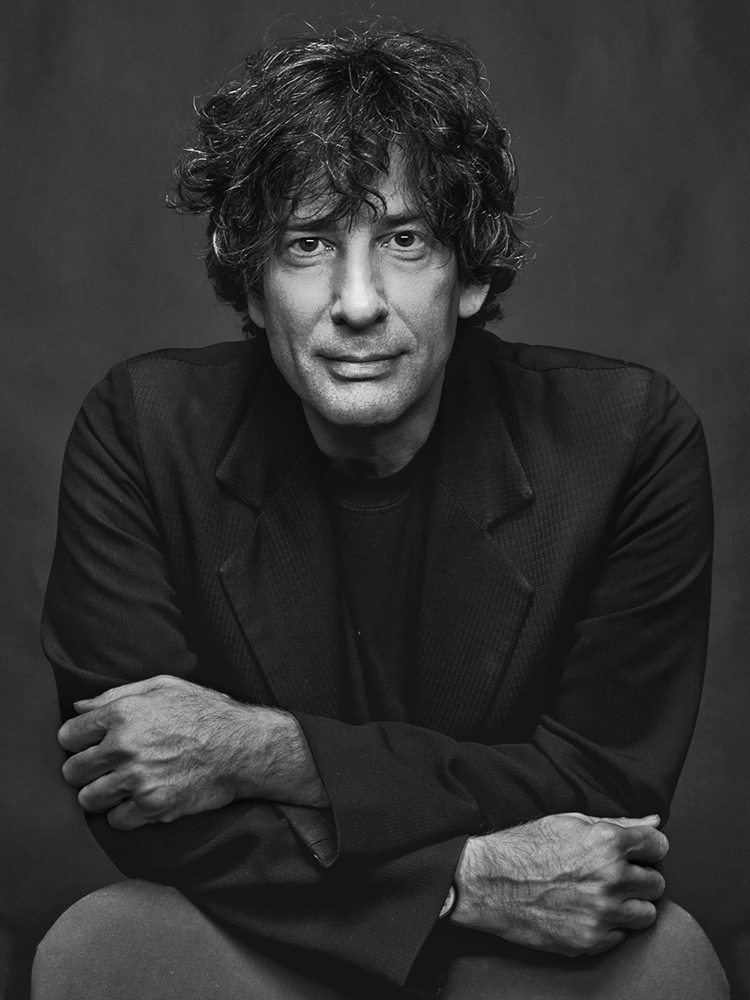

Автор
Н
ил Гейман — британский писатель, автор романов, графических романов и сценариев. Его произведения переведены на десятки языков.
Он получил множество наград, включая премии Хьюго, Небьюла и Британскую премию фэнтези.
«Океан в конце дороги» — один из самых личных его текстов, написанный после смерти отца.
В нём он хотел исследовать тему памяти, детства и того, как прошлое живёт внутри нас.
Роман затрагивает темы поиска себя и «разрыва между детством и взрослой жизнью».
В 2013 году роман был признан лучшей книгой по версии British Book Awards.

Иллюстратор
С
офия Шумакова-Коровкина, студентка четвёртого курса Санкт-Петербургского государственного университета промышленных технологий и дизайна, кафедра цифровых и аддитивных технологий, направление «Прикладная информатика в дизайне».
Данный проект является выпускной квалификационной работой. Все иллюстрации, анимации и программная реализация выполнены автором самостоятельно.
«Океан в конце дороги» — одна из тех книг, которые остаются с тобой. История про то, как детство живёт внутри нас — даже когда мы уже давно выросли и забыли. Именно это ощущение я старалась передать через каждую иллюстрацию.
Книгу вы только что прочли. Дело сделано. Мы дошли до благодарностей. Сказать по правде, они не часть книги. И читать их не обязательно. В основном это лишь имена. Семья в этой книге — не моя семья, а мои родственники великодушно позволили мне разграбить уголок нашего детства, и следили за тем, как я без особого стеснения переделываю знакомые места, вставляя их в сюжет. Я благодарен им всем, в особенности своей младшей сестре Лиззи, которая поддерживала меня и посылала давно забытые и подстегивающие память снимки (жаль, я вовремя не вспомнил старую теплицу, чтобы и ее вставить в книгу). Я должен поблагодарить очень и очень многих: тех, кто был рядом в нужную минуту, тех, кто приносил чай, тех, кто написал книги, на которых я вырос. Выделять кого-то из них глупо, и все же…
Закончив книгу, я отослал ее многим друзьям на читку, и они читали придирчивым взглядом, отмечая, что работает, а что нуждается в доработке. Я благодарен им всем, но в особенности я должен сказать спасибо Марии Давана Хедли, Олге Нуньес, Алине Симон (королеве заголовков), Гэри К. Вульфу, Кэт Ховард, Келли МакКаллоу, Эрику Сассмену, Хейли Кэмпбелл, Вале Дудич-Лупеску, Мелиссе Марр, Элиз Маршалл, Энтони Мартиньетти, Питеру Страубу, Кэт Деннинге, Джину Вулфу, Гвенде Бонд, Энн Бобби, Ли Барнетту («Попугайчику»), Моррису Шамаху, Фаре Мендельсон, Генри Селику, Клэр Кони, Грейс Монк и Корнелии Функе. Начало этому роману, хотя тогда я не знал, что он дорастет до такого, было положено, когда Джонатан Стрэн попросил меня написать рассказ. Я начал писать про добытчика опалов и Хэмпстоков (которые жили на ферме у меня в голове уже столько времени), и Джонатан великодушно простил меня, когда я в конце концов признался себе и ему, что это совсем не рассказ, и позволил истории стать романом. В Сарасоте, штат Флорида, Стивен Кинг напомнил мне, какое это счастье — просто писать каждый день. Иногда слова спасают нам жизнь. Тори предоставила мне дом, чтобы я мог спокойно писать, и я безмерно ей благодарен. Арт Шпигельман любезно позволил мне взять эпиграфом к книге слова Мориса Сендака из их разговора, опубликованного в «Нью-йоркере». И переделывая книгу во второй раз, и набирая на компьютере первый рукописный черновик, я читал вечером в постели этот дневной отрывок своей жене Аманде и, вот так читая ей вслух, узнал о написанных мною словах куда больше, чем когда-либо. Она была первым читателем книги, и ее замешательство, вопросы и удовольствие вели меня сквозь последующие черновые дебри, (Я написал эту книгу для Аманды, когда она была далеко и я очень скучал. Без нее моя жизнь была бы более серой и унылой.) Мои дочки Холли, Мэдди и сын Майкл — самые мудрые и добрые критики на свете.
У меня прекрасные издатели по обе стороны Атлантики: Дженнифер Брел, Джейн Морпет и Розмари Броснан, они прочли первый черновик книги, и каждая отметила что-то, что нужно было исправить, отладить и переделать. Джейн и Дженнифер отлично скооперировались, когда книга неожиданно подоспела — неожиданно для нас всех, включая меня. Я хочу сказать огромное спасибо комитету по организации лекций в память Зены Сазерленд в Чикагской публичной библиотеке: я провел там лекцию в 2012 г., и сейчас, по прошествии времени, мне ясно, что в основном это была беседа с самим собой о том, как писалась эта книга, попытка понять, что и для кого я пишу. Вот уже двадцать пять лет, как Меррили Хейфец — мой литературный агент. Ее помощь в подготовке этой книги, как и вообще любой другой моей книги на протяжении последней четверти века, поистине неоценима. Джон Левин, мой агент по киноделам, — замечательный чтец и строит недовольные гримасы а-ля Ринго Старр. Добрые твиттеряне очень выручили меня, когда понадобилось выяснить, сколько стоили лакричные тянучки «Черный Джек» и фруктовые жевательные конфеты в 1960-е гг. Без них я бы писал эту книгу вдвое дольше.
А в завершение я хочу поблагодарить Хэмпстоков, которые так или иначе, но всегда были рядом, когда я в них очень нуждался.
Нил Гейман. Остров Скай. Июль 2012 г.
Эта книга — чистый вымысел. Все персонажи, события и диалоги — не более чем плод авторского воображения и не имеют отношения к реальности. Любое сходство с реальными событиями и людьми, ныне здравствующими или мертвыми, является совершенно случайным.